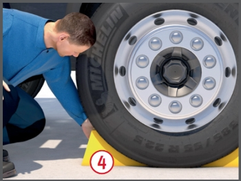
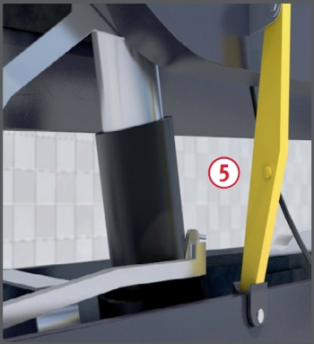
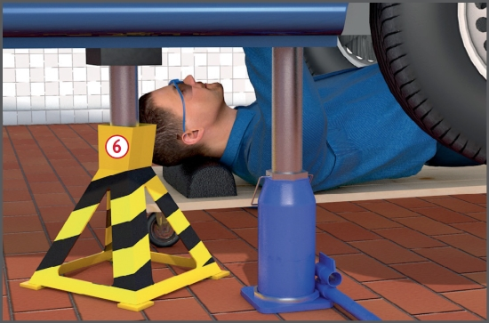
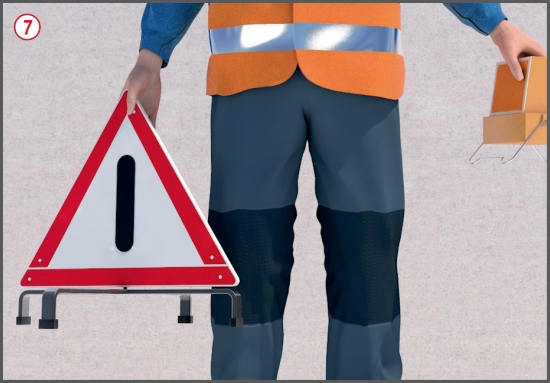

In nicht gesicherte Arbeitsgruben können Personen hineinstürzen.
Durch brennbare, gesundheitsschädliche
Gefahrstoffe kann es
zu Schädigungen der Haut und
der Atemwege kommen.
Schutzmaßnahmen
Reinigungsarbeiten nicht mit
brennbaren oder gesundheitsschädlichen
Flüssigkeiten ausführen,
sondern wasserlösliche
Waschmittel, z. B. flüssige Seife,
verwenden.
Brennbare Flüssigkeiten, z. B.
Kraftstoffe, in bruchfesten, verschließbaren
und gekennzeichneten
Behältern sammeln.
Ausgelaufene oder verschüttete
Flüssigkeiten sofort entfernen und sachgerecht entsorgen.
Benutzte Putzlappen und -wolle in dicht schließenden,
nicht brennbaren Behältern
sammeln (Gefahr der Selbstentzündung).
Hautschutz beachten. Vor der
Arbeit und nach den Pausen
gezielter Hautschutz, nach der
Arbeit und vor den Pausen richtige Hautreinigung und am
Arbeitsende Hautpflegemittel
verwenden.
Abgase ins Freie ableiten oder
absaugen.
Werkstatträume
Fußböden müssen eben und
rutschhemmend sein. Benzin,
Diesel und Öl dürfen nicht in Böden
eindringen.
Notausgänge kennzeichnen
und freihalten.
Arbeitsgruben
Arbeitsgruben und Unterfluranlagen
müssen über mindestens
2 Treppen betreten werden
können.
Zugänge nicht verstellen.
Öffnungen deutlich kennzeichnen, z. B. schwarz-gelber
Warnanstrich .
Beim Auftreten gesundheitsschädlicher Gase und Dämpfe technische Lüftungsmaßnahmen vorsehen, die einen mindestens 6-fachen Luftwechsel/Stunde, bezogen auf den Rauminhalt der Arbeitsgrube, sicherstellen.
Unbenutzte Gruben
abdecken, umwehren oder
absperren.
Hebebühnen
Hebebühne nicht überlasten.
Bediener müssen in der bestimmungsgemäßen Benutzung unterwiesen und beauftragt sein.
Sicherheitsabstand von mindestens
50 cm zur Vermeidung
von Quetschgefahren einhalten.
Fahrzeuge mittig und gleichmäßig
beladen auf die Hebebühne auffahren.
Hebebühnen gegen unbefugte
Benutzung sichern, z. B. durch
abschließbaren Hauptschalter.
Sichern von Fahrzeugen
Abgestellte Fahrzeuge gegen
Wegrollen sichern, z. B. durch
Feststellbremse, Unterlegkeile .
Kraftbetätigte Fahrzeugteile
(z. B. Ladeschaufeln, gekippte
Führerhäuser, Pritschen) gegen
unbeabsichtigte Bewegungen
oder Absinken formschlüssig
sichern .
An und unter angehobenen
Fahrzeugen nur arbeiten, wenn
diese gegen Abrollen oder Umkippen
durch Unterstellböcke
gesichert sind.
Wagenheber bestimmungsgemäß verwenden, z. B. zum Radwechsel.
Unterstellböcke entsprechend der zulässigen Belastung auswählen (Kennzeichnung muss am Unterstellbock vorhanden sein).



Zusätzliche Hinweise
Arbeiten im öffentlichen
Verkehr
Bei Instandsetzungsarbeiten
Schutzmaßnahmen gegen Gefahren
durch vorbeifließenden
Verkehr treffen :
Warn- bzw. Sicherungsposten einsetzen,
Warnkleidung (mindestens Warnweste nach DIN EN ISO 20471:2013-09) tragen,
Arbeitsbereich durch Warndreieck bzw. Warnleuchte kennzeichnen bzw. absperren.

Umgang mit Batterien
Beim Befüllen der Batterien
Fülleinrichtungen benutzen.
Laden der Batterien nur in
besonderen Räumen.
Batterieladeräume müssen trocken, kühl, belüftet und gekennzeichnet sein.
Künstliche Belüftungsanlagen
sind vor Beginn des Ladevorgangs
einzuschalten und
müssen mindestens 1 Stunde
länger als der Ladevorgang
eingeschaltet bleiben.
Funken reißende Einrichtungen
(z. B. Schalter, Steckdosen,
elektrische Betriebsmittel) müssen
mind. 1 m von den zu ladenden
Batteriezellen entfernt sein.
Entzündbare Stoffe von Ladestellen fernhalten.
Batterien nicht unter Stromfluss
abklemmen.
Prüfungen
Art, Umfang und Fristen erforderlicher
Prüfungen festlegen und einhalten,
z. B.:
arbeitstäglich mit Funktionsproben,
mind. 1 x jährlich durch eine "zur Prüfung befähigte Person" (z. B. Sachkundiger).
Ergebnisse der regelmäßigen
Prüfungen im Prüfbuch dokumentieren.
Arbeitsmedizinische
Vorsorge
Arbeitsmedizinische Vorsorge
nach Ergebnis der Gefährdungsbeurteilung
veranlassen (Pflichtvorsorge)
oder anbieten (Angebotsvorsorge).
Hierzu Beratung
durch den Betriebsarzt.